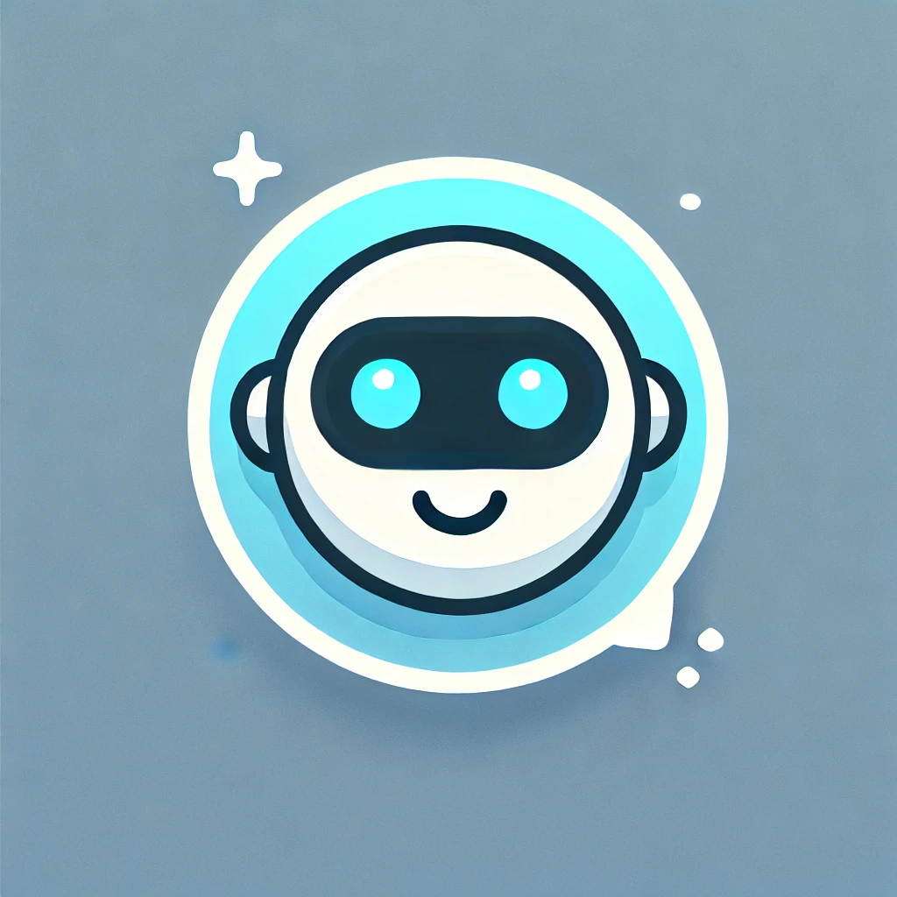
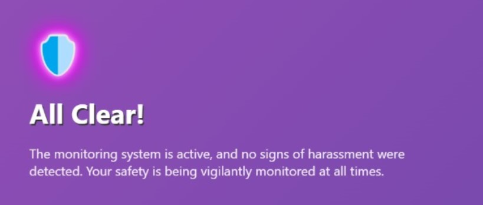
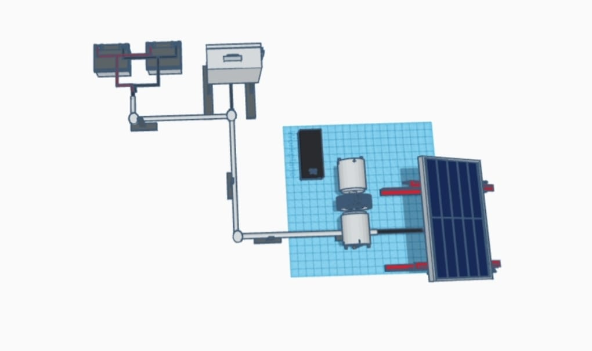

Agni Bot
Agni is a friendly Tamil-speaking chatbot created to engage users in
warm and interactive conversations entirely in Tamil. Designed with
a playful and caring personality, Agni brings a personalized touch
to every interaction, making it an enjoyable companion that
understands and respects the Tamil language and culture.
@vinayagam_123_bot
Jolly Bot

Meet Jolly Bot – your AI-powered friend on Telegram! 🎉 This playful chatbot senses your mood, mimicking human
emotions to cheer you up or lend a virtual ear when you’re feeling down. Whether you’re happy, sad, or simply
bored, Jolly Bot’s here to keep you company and bring some joy!
@jolly_bot
Safeguard AI

Safeguard AI is a workplace safety project designed to detect harassment and accidents using CCTV cameras. It
sends live video feeds and location data to authorities in real-time, utilizing gesture recognition for
instant action.
The system includes accident reporting, gesture-based video streaming, and drone integration
for location tracking.
EcoDrive assist

E-bikes use dual batteries and solar charging for uninterrupted power, enhancing eco-friendliness and
reliability. A proposed speed control device at traffic signals warns drivers to slow down and automatically
reduces speed, enhancing road safety.
River AI
River AI is a real-time water quality monitoring system that uses IoT sensors and AI to detect river pollution, sending instant alerts for quick action. Designed to be scalable and customizable, it enables proactive pollution management and promotes sustainable practices among local communities and industries.
Note: This Project is on Development.